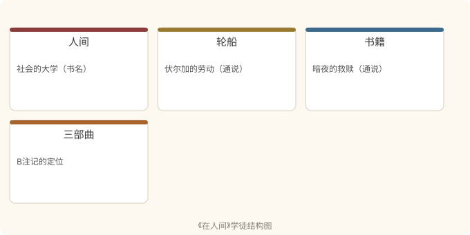

在人间
一、基本信息
| 作者 | 马克西姆·高尔基 |
|---|---|
| 成书/出版 | 作者页注记：Britannica——自传三部曲（年份通说待核——1916说） Maxim Gorky — Encyclopaedia Britannica（百科全书） |
| 国别/地区 | 俄国 |
| 时代 | 近代 · 20世纪10年代 |
| 体裁 | 自传小说 |
| 语言 | 俄语 |

《在人间》学徒结构图（主题·结构图）
二、创作背景
作者页注记：童年/在人间/我的大学——'自传三部曲（Britannica：one of the finest autobiographies in Russian literature）'。
Britannica：高尔基——俄国作家（作者页语境）。
题材（通说待核）：阿列克谢的'人间'学徒岁月：鞋店、绘图的作坊与轮船。
三、内容脉络
（通说待核）'人间'：伏尔加河上的洗碗工与画坊学徒。
（通说待核）'大学'之前的'社会大学'。
四、主要人物表
| 人物 | 身份 | 说明 |
|---|---|---|
| 阿列克谢 | 少年学徒 | （通说待核） |
| 厨师（'司炉'说） | 书籍的引路人 | （通说待核） |
五、主题与艺术特点
- '社会大学'的学徒（书名语境——通说待核）。
- 自传三部曲之二（B注记）。
- 书籍的救赎（通说待核）。
六、影响与评论
- Britannica：'one of the finest autobiographies in Russian literature'（作者页注记）。
Maxim Gorky — Encyclopaedia Britannica（百科全书） - Britannica：三部曲（作者页注记）。
Maxim Gorky — Encyclopaedia Britannica（百科全书）
七、阅读建议
难点
- 三部曲的顺序。
- 19世纪末俄国的底层行业。
- 《在人间》中译本（人民文学等——通说待核）。
- 俄文原版（公有领域状态待核）。
三部曲之二；承接《童年》。
八、待核实
- 1916年出版细节待核。
- '社会大学'说法待核。
- 人物名核对（通说）。